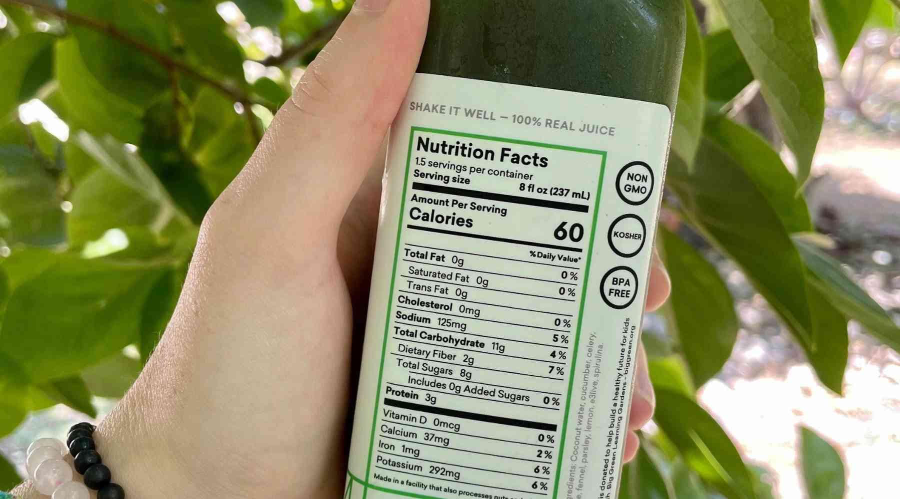

🤔 See What's Really Inside Your Food—Interact with Nutrition Facts
Despite how common they are, more than half of global consumers report they only "partly" understand nutrition labels
Taking a look at a healthy subject
Eating fewer calories doesn't necessarily mean better metabolic health.
Calories consumed
Timeline
A Look at a Diabetic Subject
What can we learn from the individual with the widest glucose range?
📊 Subject Data: Tracking Metabolic Health
Over a 10-day study, 45 participants were monitored to track key health parameters, including continuous glucose levels, macronutrient consumption, and heart rate. Each dot represents an individual subject, grouped by their metabolic health status. Hover over each dot to see a summary of the collected data. To learn more about the study, click here.
🔍 Explore a food label - Click on highlighted parts for more details.

Diabetics Consumed Fewer Calories on Average
Notice that the previously highlighted subjects all appear on this graph! Try to find them based on the calorie statistics we provieded and see where they fall relative to the other individuals as well! You may notice the following:...
Average Heart Rate Shows Minimal Variation Between Groups
The visualization below displays the average heart rate of participants over the 10-day study. Each subject's heart rate was recorded using minute-level data from the Fitbit Sense Smartwatch, measured in beats per minute. Each dot represents an individual participant, grouped by health status.
Use the slider to move the black dot across all three groups and adjust your heart rate. See where your value falls in comparison to the study participants!
However, glucose levels are still the best predictor of diabetic groups...
This plot shows the range of blood glucose levels measured by the Libre Pro sensor for each subject over a 10-day period. The color of the line represents the subject's metabolic health group, with blue representing healthy, orange representing pre-diabetes, and red representing Type II diabetes. While other metrics we have explored are important, glucose levels are closely linked to the body's ability to manage and process sugar, which is the defining feature of diabetes. This makes glucose levels the most reliable predictor of metabolic health status.
Hovering over a line will display the subject's ID and the range of glucose levels for that subject. Adjust the slider for glucose range to see how your predicted metabolic group changes based on your glucose levels!
Putting it all together: Making Predictions and Moving Forward
Hopefully, you have had time to engage with all of the health metric visualizations! Each interactive graph allowed you to search for trends and patterns across metabolic health groups for these different metrics . However, you may have noticed that the measurements for these metrics aren’t always as determinant of a subject’s metabolic health group as you may initially think. For example, it is surprisingly the case that diabetics consume the least calories per day on average, while the subject that consumed the most calories falls into the “healthy” group. As such, your predicted metabolic health group should not be treated as an absolute assessment, but rather a possible indicator or warning based on some common but important metrics.
If you are to take something from this metabolic insights journey, let it be that improving or maintaining your health requires making smart decisions across all of these metrics and more, which will benefit any reader, regardless of their metabolic health status.
Predictions:
- Your Average Daily Calorie Intake: 2000.00 Calories
- Your Average Heart Rate: 40.00 BPM
- Your Glucose Range: 100.00 - 200.00 mg/dL
- Your Predicted Metabolic Health Group: Pre-Diabetes